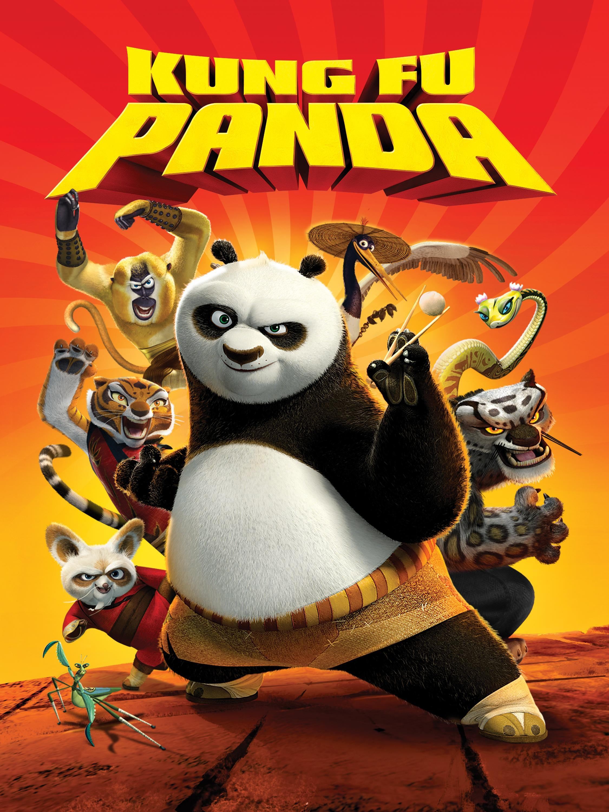
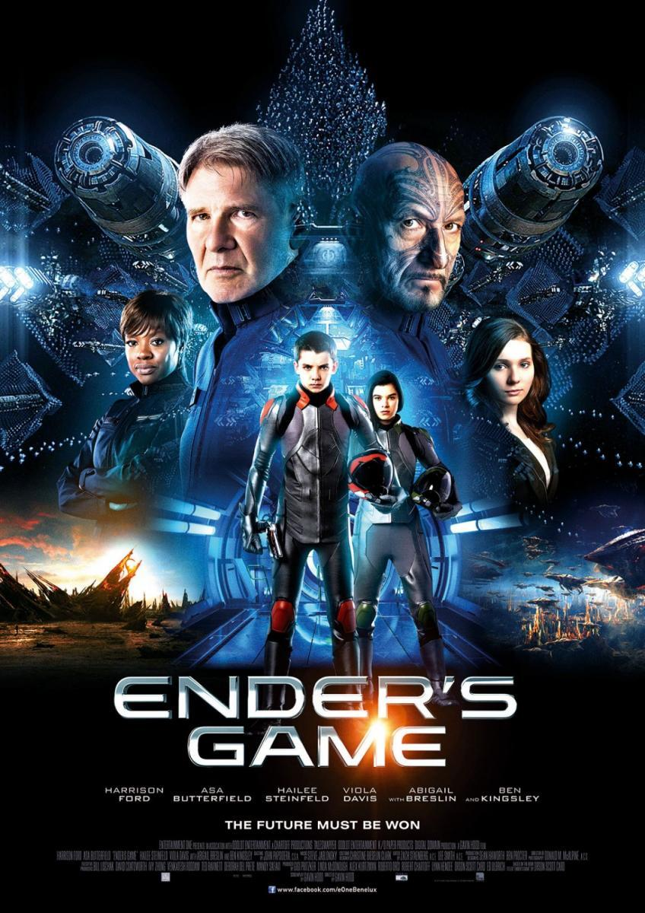
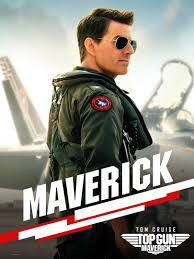
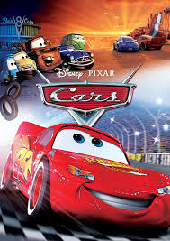

Kung Fu Panda
Davant l'amenaça d'un poderós dolent, un panda grassonet i gandul decideix deixar de banda la migdiada i defensar el seu poble convertint-se en el Guerrer Drac.
Buscant a Nemo

És la història d'un peix pallasso anomenat Marlin, que emprèn un viatge submarí per trobar el seu fill desaparegut Nemo qui té una aleta dolenta que es va fer mal quan era molt jove.
Toy Story

Toy Story segueix les aventures de les joguines que pertanyen a un nen anomenat Andy. El seu favorit és un xèrif del Vell Oest anomenat Woody, que actua com el líder de la resta de les joguines d'Andy, inclòs un Tyrannosaurus rex.
El Joc de Ender
Està ambientada en un futur on la humanitat s'enfronta a l'extermini en mans d'una agressiva societat extraterrestre coneguda com els "insectors" (buggers a l'original).
Maverick
Després de més de 30 anys de servei com un dels millors aviadors de l'Armada, Pete "Maverick" Mitchel es troba on sempre va voler estar, empenyent els límits com un valent pilot de proves.
Cars
L'aspirant a campió de carreres Rayo McQueen sembla que està a punt d'aconseguir l'èxit. La seva actitud arrogant s'esvaeix quan arriba a una petita comunitat oblidada que li ensenya les coses importants de la vida que havia oblidat.